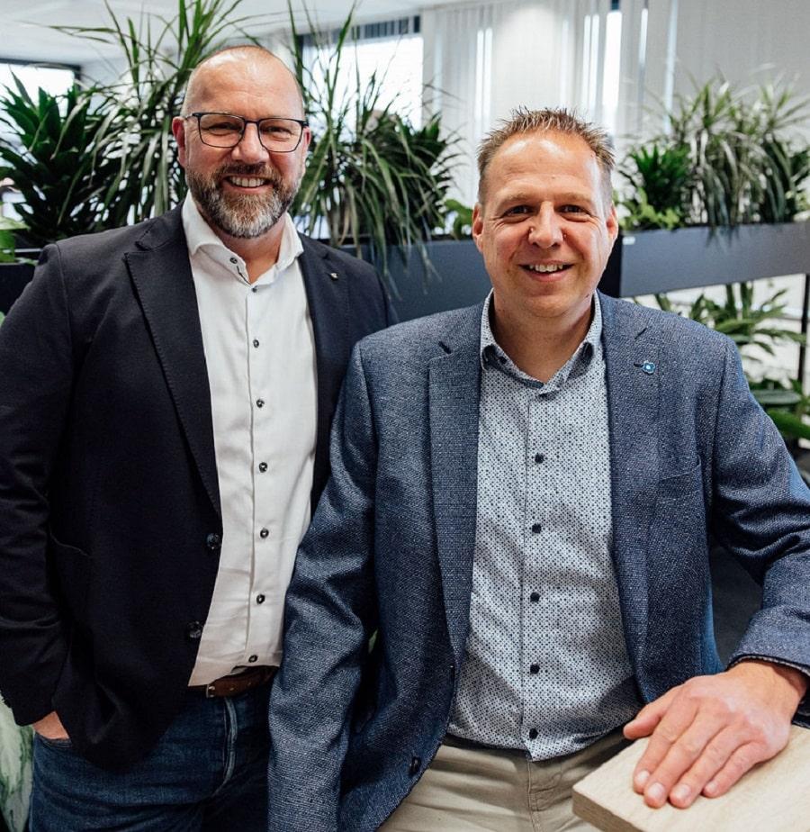
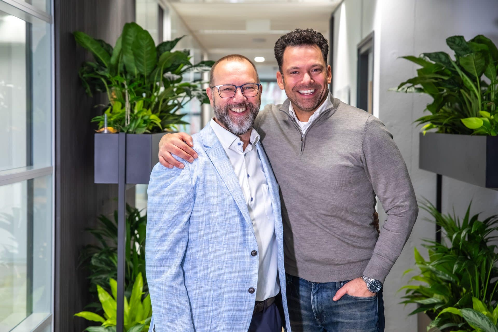

Het ontstaan van DIS Group
Voor het ontstaan van DIS Group gaan we even terug naar het jaar 2017. DIS Group is ontstaan vanuit één duidelijk uitgangspunt: wij willen klanten écht kunnen helpen met de juiste mensen en de juiste kennis.
Het idee achter DIS Group komt van Edwin Leentfaar, die vanuit zijn ervaring als ZZP’er in de wereld van Microsoft Dynamics en 4PS merkte dat de vraag naar goede specialisten snel groeide. Projecten werden steeds groter en complexer, en klanten vroegen steeds vaker om extra capaciteit en expertise. Vanuit Edwin zijn netwerk van professionals ontstond een hechte groep mensen die elkaar continu wisten te vinden en versterken.
Wat begon met losse samenwerkingen groeide al snel uit tot een vast netwerk van specialisten die elkaar vertrouwen en aanvullen. In 2017 zette Edwin de stap om dit officieel te maken en is DIS Group opgericht (toen bekend als Dynamics Interim Solutions).
Neem contact op

Mensen moeten zich thuis voelen
In de jaren daarna groeide DIS Group verder door en kwamen en meer mensen bij. Conrad van Kooten speelde hierin een belangrijke rol: hij sloot zich aan vanuit de praktijk en bouwde mee aan de verdere ontwikkeling van functioneel beheer binnen DIS. Vanuit die samenwerking ontstonden nieuwe initiatieven en langdurige klantrelaties.
De groei van DIS Group bleef altijd organisch. Via ons netwerk en eerdere samenwerkingen kwamen steeds meer collega’s aan boord die passen bij onze manier van werken. Zo sloot Bas Geelen zich in 2023 aan als directeur development, en versterkt Bastiaan Jol het team sinds 1 januari 2026 als directeur van BI Solutions. Allebei brengen zij hun eigen ervaring en expertise mee, maar delen ze dezelfde mentaliteit: samen werken, verantwoordelijkheid nemen en doen wat nodig is voor de klant.
Onze grootste uitdaging is en blijft het vinden van mensen die niet alleen veel kennis en expertise hebben van ERP systemen, maar ook echt passen bij onze cultuur. Voor ons draait het om vertrouwen, samenwerking en de wil om elkaar en de klant verder te helpen. Wij staan altijd voor elkaar klaar en zorgen ervoor dat mensen zich thuis voelen. Juist dat vinden wij echt belangrijk.
Wat ons onderscheidt is dat we werken met mensen uit de praktijk, altijd meedenken met de klant en geloven in samenwerking als één team. De klant staat bij ons centraal, en we doen het altijd samen.
En dat is nog steeds waar DIS Group elke dag voor staat.
